SOC104 · Malware Detected: evento 36
- Categoria
- Malware
- Caso
- SOC104-36
- Registro
- Indicadores suspeitos
Resumo
Hash classificado como suspeito no VirusTotal e requisição direta do host AdamPRD (10.15.15.18) para o IP 92[.]63[.]8[.]47, suspeito no VirusTotal e malicioso no Threat Intelligence. No endpoint não havia ação maliciosa em execução, o que não prova que o arquivo não foi executado.
IOCs
| Tipo | Valor | Observação |
|---|---|---|
| MD5 | f83fb9ce6a83da58b20685c1d7e1e546 | Hash do arquivo. |
| IP | 92[.]63[.]8[.]47 | Requisição HTTP direta, sem domínio. |
| Host | AdamPRD / 10.15.15.18 | Origem da requisição. |
Passo a passo da investigação
1. Abertura do chamado
Primeiro, abra o chamado clicando no ícone destacado.
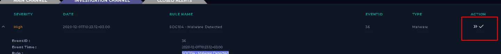
2. Verificação no Endpoint Security e no VirusTotal
Analise as informações destacadas no Endpoint Security e no VirusTotal.
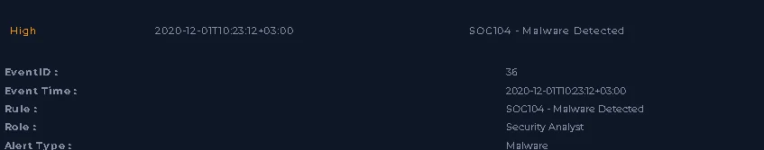
No Endpoint Security, localizamos o computador do ADAM. Nesta verificação, não identificamos nenhuma ação maliciosa em execução.
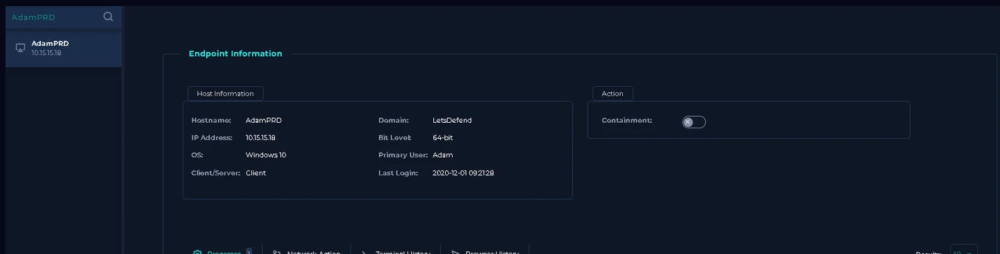
3. Investigação dos indicadores
Acesse o Log Management e verifique se há registros suspeitos relacionados ao IP interno 10.15.15.18.
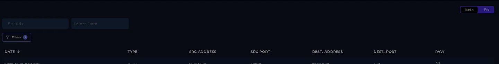
Copie o hash do arquivo e pesquise-o no VirusTotal:
f83fb9ce6a83da58b20685c1d7e1e546.
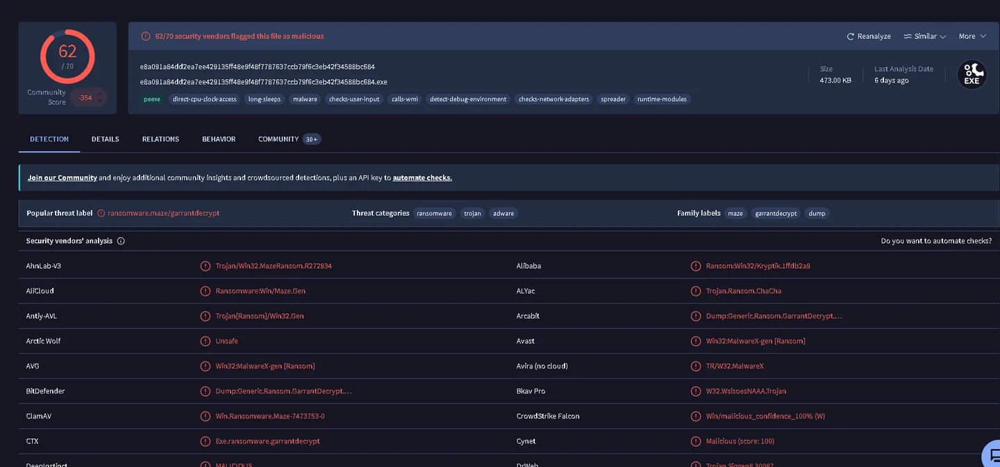
Na consulta realizada, o hash foi classificado como suspeito. Em
seguida, analise o IP associado à URL registrada no computador do ADAM:
92.63.8.47.
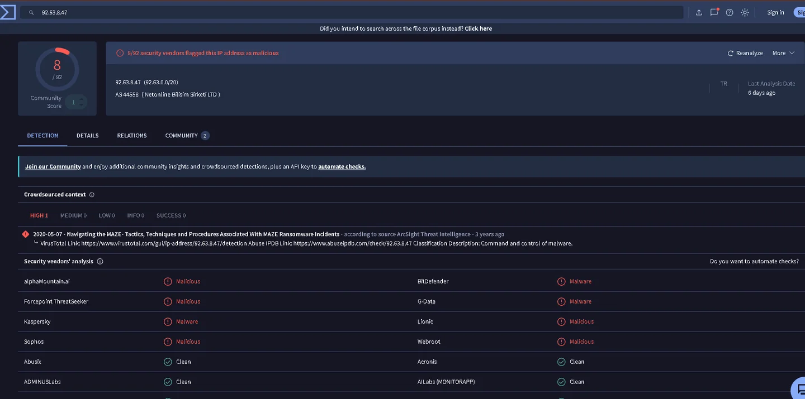
O endereço IP também foi classificado como suspeito.
A consulta no Threat Intelligence também indicou o IP como malicioso.
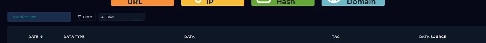
4. Evidências registradas no playbook
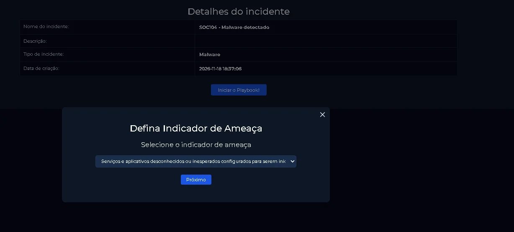
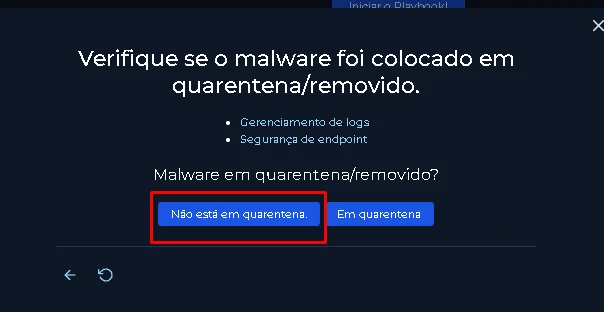
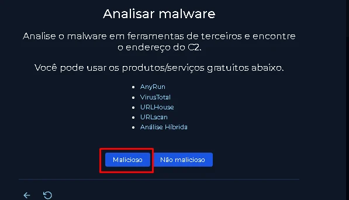

5. Análise da conexão observada
O registro indica que a máquina 10.15.15.18 fez uma requisição HTTP diretamente para o IP 92.63.8.47, sem usar um domínio. Esse padrão pode ser compatível com comunicação com um servidor de comando e controle (C2), mas, isoladamente, não comprova atividade maliciosa. Correlacione a conexão com o processo responsável, o horário e outros eventos do endpoint.
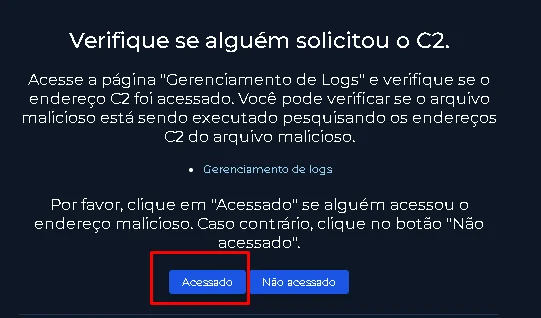
6. Conclusão
O hash f83fb9ce6a83da58b20685c1d7e1e546 foi sinalizado
como malicioso no VirusTotal. Os registros do Log Management mostram uma
requisição da máquina 10.15.15.18 para o IP
92.63.8.47, cuja reputação também foi indicada como
suspeita no VirusTotal e maliciosa no Threat Intelligence. Na análise do
computador do ADAM, não foram observadas ações maliciosas em execução.
Essa constatação, por si só, não comprova que o arquivo não foi
executado.
7. Recomendações para documentar a análise
Ao documentar a investigação, separe claramente três aspectos: 1. Identificação: o que foi encontrado? (Hash e IP). 2. Investigação: quais ferramentas foram utilizadas e o que foi identificado? 3. Impacto: houve execução do arquivo? Existem evidências de comprometimento? Importante: só conclua que o arquivo não foi executado quando houver evidências suficientes nos logs e no endpoint. A ausência de evidências não prova que a execução não ocorreu. Continue assim! O importante é aprender a documentar o raciocínio da investigação, não apenas o resultado.
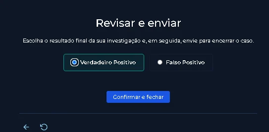
Lições aprendidas
- Documentar em três blocos: identificação, investigação e impacto.
- Só concluir que não houve execução com evidência em logs e endpoint.
Exercício simulado. Algumas capturas foram recortadas ou tiveram campos ocultados.